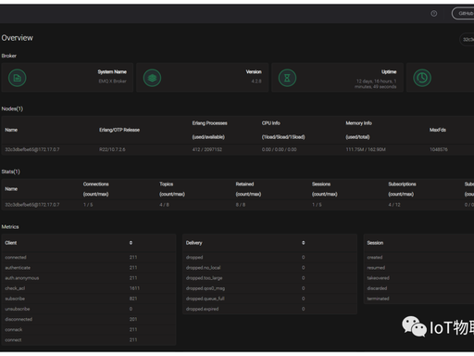
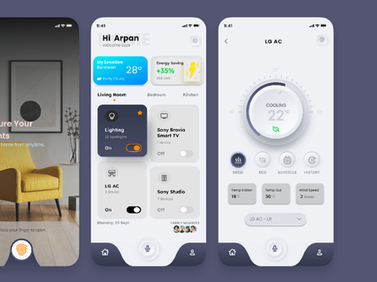
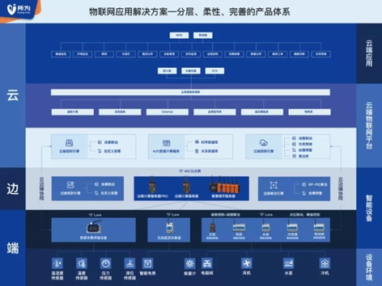
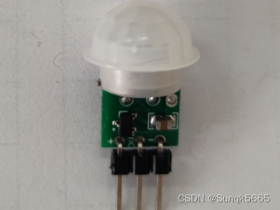
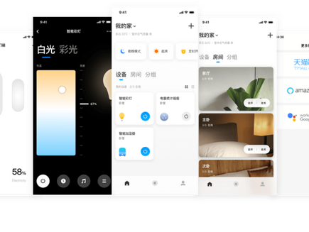

Exercise 6: IoT and Interaction
View your assignment
Analysis of IoT Operation Process and Practical Application Case
1. Analysis of IoT Operation Process Based on the Diagram
This diagram illustrates a typical four-layer IoT architecture, which also serves as the underlying supporting framework for Industry 4.0. The complete top-down operation logic is as follows:

1.1 Bottom Layer: Physical World & End Users (Things World + Customers)
This is the data source of the entire IoT system, covering physical devices, daily scenarios, ordinary users and real environments.
• Input: Industrial know-how (product operation logic, residents' living demands, equipment maintenance experience), which guides sensor layout and data collection standards.
• Output: Physical signals such as temperature, human motion, power consumption and user operations, which are transmitted upward to the hardware sensing layer.
1.2 Hardware Sensing Layer: Sensors + Controllers
This layer acts as the "sense organs and limbs" of IoT.
• Sensors collect raw physical data including temperature & humidity, human body induction, power consumption, button operations and door/window status.
• Controllers conduct local preliminary judgment and data filtering to eliminate invalid information.
• Two-way interaction: It receives control commands from the cloud to manipulate physical devices, and uploads standardized data to communication modules.


1.3 Transmission Layer: Communication Module
This is the data transmission channel of IoT, enabling bidirectional data exchange:
• Uplink: Data collected by sensors is uploaded to the cloud via Wi-Fi, Bluetooth, 4G or 5G.
• Downlink: Control commands (power on/off, mode adjustment, timing setting, etc.) issued by the cloud are sent back to controllers to realize remote control.
It works as the intermediate hub connecting end hardware and cloud software.

1.4 Top Layer: Cloud + Social Networking (Software Applications)
Regarded as the "brain" of IoT, this layer delivers core value including convenience and efficiency.
• The cloud stores massive equipment operation data, and leverages big data and AI algorithms to analyze user habits.
• Supporting software: smart home mobile apps, equipment operation & maintenance background systems, community intelligent linkage platforms.
• Value closed loop: Data analysis results optimize automatic equipment logic and residential experience, and cut household energy consumption, thus improving overall life efficiency.
• Complete commercial closed loop: Household appliance industry know-how empowers smart hardware, while upper-layer software services upgrade user experience. The integration of hardware and software forms mature consumer IoT commercial solutions.


Overall Closed-Loop Logic
Household industry know-how → Household physical objects & users → Sensors collect environmental and device data → Communication modules transmit data bidirectionally → Cloud & mobile apps analyze user routines and generate optimization strategies → Control commands are sent to adjust hardware automatically → Continuous improvement of household comfort and energy-saving efficiency, forming an iterative cycle.
2. Daily Life Case: IoT Smart Air Conditioning System
This product is widely accessible to every household and fully matches the four-layer architecture in the diagram, with layer-by-layer correspondence as below:

2.1 Bottom Layer: Physical World & End Users
• Physical objects: Air conditioners, rooms, doors, windows, human bodies and outdoor environments.
• Know-how: Heating & cooling temperature control principles, human comfort temperature standards, energy-saving logic of home appliances, and user daily routines.
• Core user demands: Avoid frequent manual temperature adjustment, automatic temperature adaptation, power saving, remote power on/off and temperature regulation.
2.2 Sensing Layer: Sensors + Controllers
Air conditioners are equipped with multiple built-in sensors: temperature & humidity sensors, human infrared sensors, door/window contact sensors, together with the mainboard controller inside the unit.
• Data collection: Real-time indoor temperature & humidity, room occupancy, door/window open/closed status, and current power consumption of the air conditioner.
• Local autonomous control: The controller automatically reduces cooling power when sensors detect no people indoors; it sends local reminders if temperature surges due to open doors or windows.

2.3 Transmission Layer: Wi-Fi Communication Module
The built-in Wi-Fi module acts as the transmission channel:
• Uplink: Real-time data of indoor temperature, humidity, power consumption and human presence is uploaded to the brand cloud every 30 seconds.
• Downlink: Commands sent from mobile apps (power switch, temperature adjustment, timing, sleep mode) are delivered to the air conditioner controller via the module for execution.
2.4 Cloud & Software Application Layer: Home Appliance Cloud Platform + Smart Home Mobile App
1. The cloud stores long-term data of daily air conditioner operation, indoor temperature and power consumption across all rooms.
2. AI algorithms analyze user schedules: for example, identifying users' routine of sleeping at 23:00 and leaving home at 7:00, then generating personalized temperature control plans automatically.
3. Supporting software: Mobile smart home apps and manufacturer's equipment operation & maintenance backend.
4. Practical efficiency gains:
• No manual operation required; the air conditioner adapts to human presence automatically, greatly boosting residential comfort.
• Power is adjusted intelligently based on human detection and door/window status, cutting monthly air conditioning power consumption by roughly 25%.
• Users can remotely turn off the unit when going out and pre-cool the room before returning, saving waiting time.
